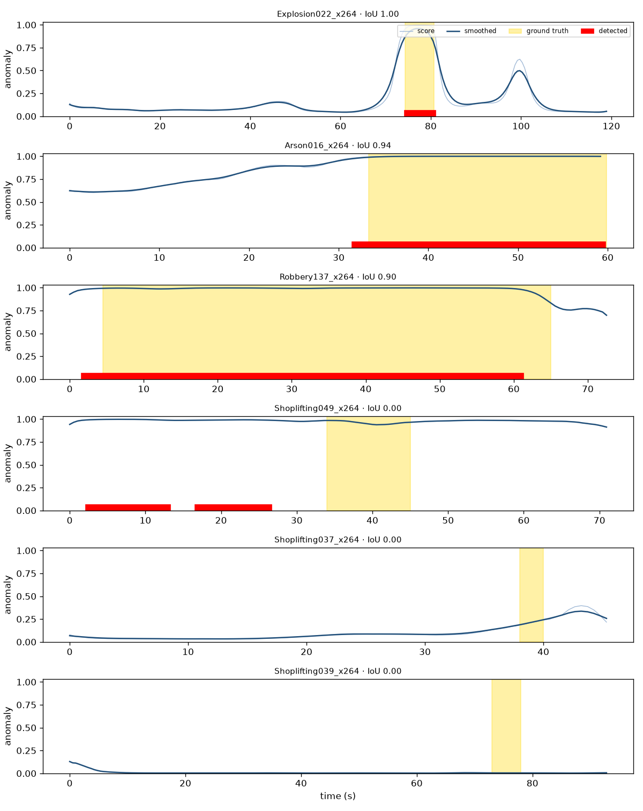
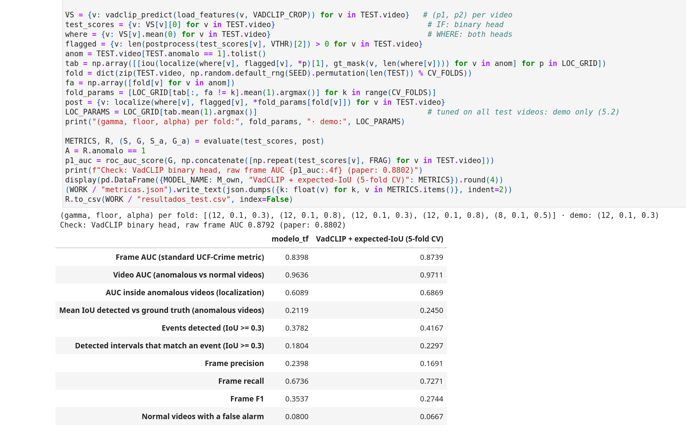

Resultados: el score mejoró mucho; el IoU, poco
| Métrica (test, 290 videos) | Entrega 2 | Propio E3 | VadCLIP + IoU esp. |
|---|---|---|---|
| AUC por frame | 0,694 | 0,840 | 0,874 |
| AUC por video | 0,978 | 0,964 | 0,971 |
| AUC de localización | 0,589 | 0,609 | 0,687 |
| IoU medio (videos anómalos) | 0,244 | 0,212 | 0,245 |
| Eventos detectados (IoU ≥ 0,3) | 39,1 % | 37,8 % | 41,7 % |
| Intervalos que coinciden con un evento | 14,7 % | 18,0 % | 23,0 % |
| Precisión / recall por frame | 0,276 / 0,488 | 0,240 / 0,674 | 0,169 / 0,727 |
| F1 por frame | 0,352 | 0,354 | 0,274 |
| Falsas alarmas (videos normales) | 10,0 % | 8,0 % | 6,7 % |
Mismo test oficial y mismas métricas en las tres columnas. En negrita, el mejor valor de cada fila.

Ejemplos: los mejores y los peores casos

evento real detectado
- Arriba: Explosion022, Arson016 y Robbery137 con IoU 0,90–1,00.
- Abajo: tres Shoplifting con IoU 0. En 049 el score queda alto todo el video; 037 y 039 no superan el umbral y no se marcan.
- Burglary024, el mejor caso de la Entrega 2 (IoU 0,96), cae a 0,09: VadCLIP lo puntúa sobre 0,8 en todo el video.


Notebook: deteccion_anomalias_tf.ipynb


Para ejecutarlo: rutas y modo en la celda 1.1 → Run All → en la celda 5.2 se elige un video y se genera el MP4 anotado. Funciona en local o en Colab.